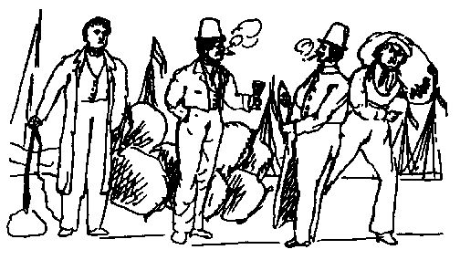
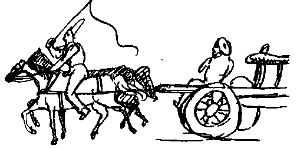

Letters of Frederick Engels
Source: MECW Volume 2, p. 507
Written: 19 September 1840
First published: in the Deutsche Revue, Stuttgart and Leipzig, Bd. 4, 1920
My most precious!
At the moment the equinoctial gales are raging frightfully; in our house a window was blown in last night and the trees are creaking most pitiably. Tomorrow and the day after there will be news of shipwrecks coming in! The Old Man [Heinrich Leupold] is standing by the window and pulling a wry face because the day before yesterday a ship went to sea in which he has 3,000 talers’ worth of linen which is not insured. You don’t say anything about the letter to Ida [Engels] which I enclosed in my previous letter; or did I forget to put it in? — I am now really staying here till Easter, which for various reasons is most welcome to me. So Ida has gone now; that will be very awkward for you.
We have quite a good camp here too, almost 3,000 men strong, Oldenburg, Bremen, Lübeck and Hamburg troops. I went there the other day, it was great fun. Right in front of the tent (a tavern owner has put up a big refreshments tent) sat a Frenchman, he was quite sozzled and could no longer stand on his feet. The waiters hung a big wreath round him, and he began to shout: Wreathe in gree-en the flo-owing bowl. [Matthias Claudius, Rheinweinlied] Afterwards they dragged him to the mortuary, that is, the hayloft, where he stayed on his back and fell asleep. When he was sober again, he borrowed a horse from somebody, mounted it and kept galloping up and down the camp. All the time he was on the point of falling off most agreeably. We had plenty of good fun there and especially fine wine. Last Sunday I rode to Vegesack, during which tour I had the pleasure of being drenched with rain four times, but I had so much inner heat that every time I dried immediately. But I had a dreadful horse with a terribly hard trot so that one’s bones were jarred to the marrow. — At this moment another 6 bottles of beer are being carried in for us, and they will at once enter upon the process of being lit — I was thinking of cigars, that should read of being emptied. — One bottle I have almost finished already and with it I smoked a cigar; presently, our Don Guillermo [Wilhelm Leupold], the young principal, will go out again, and then we shall start anew.
Sept. 19, 1840. You have a more boring life than we do. Yesterday afternoon there was no more work to do, and the Old Man was out, and Wilhelm Leupold did not show Up often either. So I lit a cigar, first wrote the above to you, then took Lenau’s Famt from my desk and read some of it. Afterwards I drank a bottle of beer and at half past seven went to Roth’s; we went off to the Club, I read Raumer’s Geschichte der Hohenstaufen and then ate beefsteak and cucumber salad. At half past ten I went home and read Diez’s Grammatik der romanischen Sprachen until I felt sleepy. Moreover, tomorrow is Sunday again and Wednesday is a day of penance and prayer in Bremen, and so we carry on gradually into the winter. This winter I shall take dancing lessons with Eberlein so as to accustom my stiff legs to a little graceful movement.

Here you have a scene in the Schlachte, i. e., the street which has the Weser on one side and where the goods are unloaded. The fellow with the whip is the wagoner who is about to drive away the sacks of coffee lying in the background; the fellow with the sack on the right is the Schlachte pirate who is loading them on the cart; by his side a cooper who has just taken a sample and is still holding it in his hand, and next to him is the bargeman from whose barge the sacks were unloaded. You won’t be able to deny that these figures are most interesting. When the wagoner drives he mounts the horse without saddle, stirrup or spurs, and keeps digging his heels into its ribs, like this:

Now it is raining again quite improperly for a Saturday evening, it should really rain only during the week, but from midday Saturday it should be fine. Do you know what superfine medium good ordinary Domingo coffee is? That again is one of those profound concepts which occur in the philosophy of the commercial profession and which your mental powers cannot understand. Superfine medium good ordinary Domingo coffee is coffee from the Island of Haiti which has a slight touch of green, is otherwise grey, and in which with ten good beans you get into the bargain four bad ones, six bits of stone and an eighth of an ounce of dirt, dust, etc. Now you will have grasped it. One pound of this now Costs 9 1/2 groats, that is 4 silver groschen and 8 123/137 pfennigs. I should not really betray these trade secrets, since one does not tell tales out of school, but because it is you I shall make an exception. — Just now our workman is saying: Herr Derkhiem, wann Se sek met de jungens gemein mokt, so mêt Se sek en beten mehr en Respekt hohlen, sons krigt Se dat Volk ganz unner de Föte, Heinrich, dat es en slimmen jung, do hebb’ ick manch’ en Tuck med har'd, Se met nich so veel domet speelen, Se möt se gliks wat achter de Ohren geven, anners helpt nich, un wann Se no'n Ohlen goht, de dait de jungem ok nix, de segt man blot [Herr Derkheim, if you make yourself cheap with the boys you must have a bit more self-respect, otherwise they will walk over you. That Heinrich, he is a bad lad, I have had a lot of trouble with him, you must not play so much with him but immediately give him a smack behind the ears, there is no help for it, and if you go to the Old Man, he won’t do anything to the boys but only say...]: Don’t bother me with the fellow. There you can practise our Low German a little. For the rest I am your most devoted
Friedrich
Bremen, 19.9.40